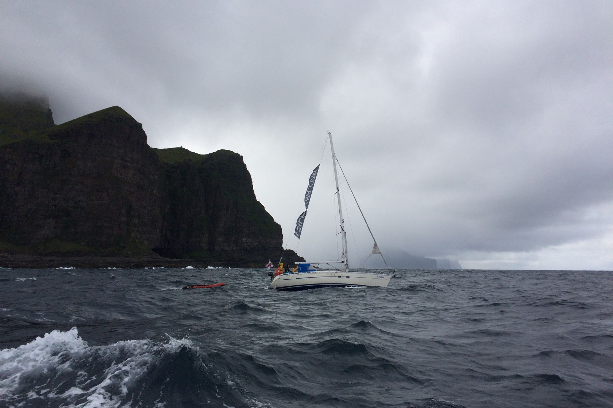
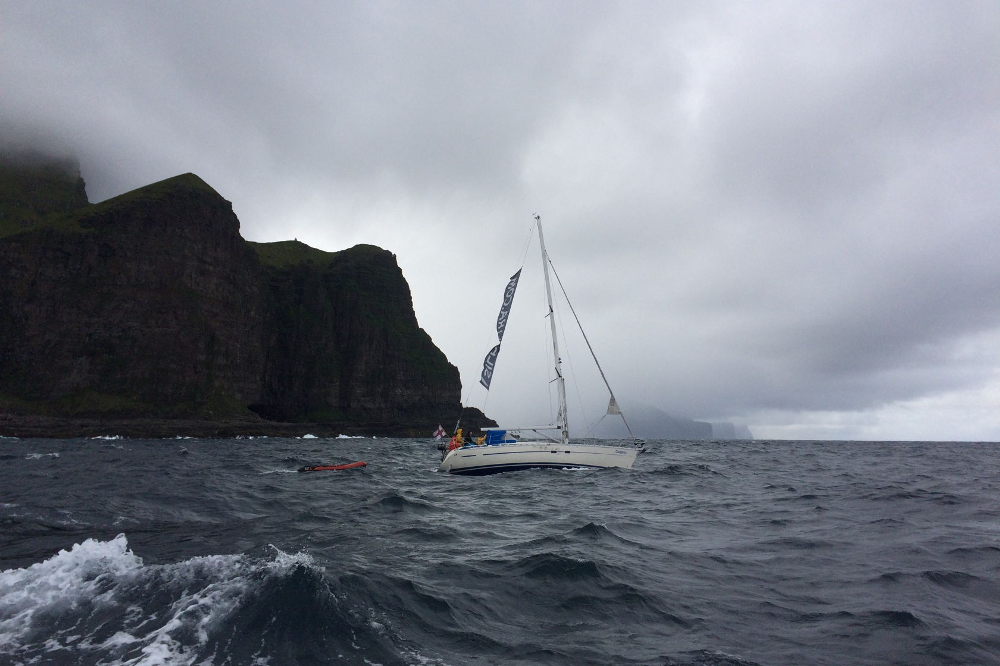

МОРЕ
Со снаряжением я как-то справилась, но противостоять волнам во время пятичасовых переходов никакая экипировка не поможет. Я прижималась к леерной стойке на корме лодки, каждая волна обдавала меня холодными солёными брызгами.
Я смотрела вдаль на горизонт и понимала, что даже качка не в силах испортить момента. Мне было жалко людей, которые жалели меня, потому что им самим порой было не лучше. Смешно, что мы даже в туалет не ходили, потому что для этого нужно было спускаться в кают-компанию, а нахождение там во время сильной качки более трёх минут влечёт за собой необратимые последствия, если вы понимаете, о чем я.
 

Когда проходишь на яхте мимо фьордов, огромных камней и высоких пещер, с разных ракурсов видишь живые щупальца тумана, которые опускаются вниз по склонам, окутывают вершины, наполняют гроты и поглощают целые острова. Туман словно дышит, медленно и глубоко. Он зачаровывает. Он создаёт удивительный эффект парящих гор, ощущение, будто ты оказался в одном из мультфильмов Хаяо Миядзаки.
Казалось, что к этим пейзажам можно привыкнуть, но каждый раз за поворотом нас ждало что-то такое, от чего замирало сердце. Невероятные недоступные долины, где каким-то образом оказывался одинокий маленький домик, солнечный свет, пробивающийся сквозь облака, насыщенная зелень склонов, тёмные и глубокие пещеры — всё это хочется видеть ещё и ещё. В одну из пещер мы заплыли на тузике: сужающиеся проходы, полная темнота и набегающие волны заставили нас понервничать.
Меня удивил и поразил океан. Его воды полны невидимой жизни и силы. Иногда становилось не по себе от ощущения, что мы здесь с ним один на один.